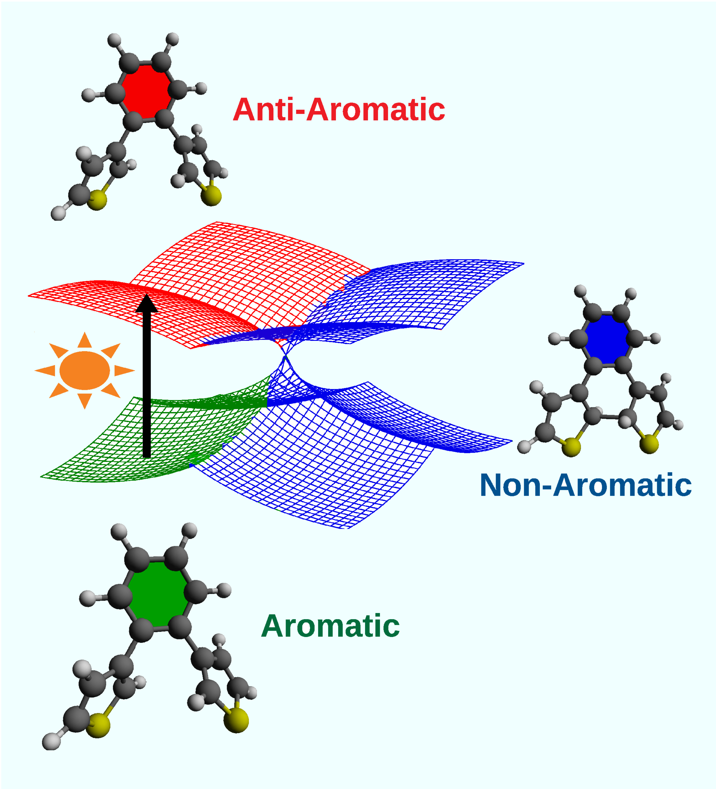

About Me
Hello! I am Dr. Baswanth Oruganti, currently working as an Associate Professor in Chemistry at Chanakya University. Based in Bangalore, I am passionate about interdisciplinary research and teaching, focusing particularly on molecular design, reaction mechanism using quantum chemistry simulations, excited-state aromaticity, and quantum computing.
Job Experience
Present Position
- Associate Professor, Chanakya University, Bengaluru, Karnataka, India
Previous Positions
- Assistant Professor, SRM University-AP, Mangalagiri, Andhra Pradesh, India: July 2022-June 2024)
- Assistant Professor, GITAM University, Visakahapatnam, Andhra Pradesh, India: July 2017-October 2019)
- SCIENTIST C, ISRO Satellite Centre, Bengaluru, Karnataka, India: September 2011-May 2012)
Education
- Ph.D.: Linköping University, Sweden (2012-2016)
- Post-Doctoral Research: Linnaeus University, Sweden (2019-2021)
- M.Sc.: IIT Guwahati, India (2008-2010)
- B.Sc.: Acharya Nagarjuna University, India (2004-2007)
Research Interests
- Quantum Computing and Quantum Chemistry
- Computational Chemistry
- Molecular Design for Solar Energy Storage Applications
- Non-Covalent Interactions and Aromaticity Analysis
- Parallels between Concepts of Inflammaging and Ayurveda Prakruti
Take the Ayurvedic Prakruti Questionnaire
Ongoing Research Projects
Integrating Valence Bond Theory with Quantum Computing Algorithms for Accurate Quantum Chemistry Simulations
In this project, our aim is to explore how Valence Bond Theory (VBT) methods such as breathing orbital valence bond (BOVB) method can be integrated into Full Configuration Interaction calculations in the framework of Quantum Phase Difference Estimation (QPDE) algorithm implemented on Quantum Computers. In QPDE algorithm, the probability of success in obtaining an accurate estimate of energy difference depends on the square of overlap integral between the approximated input wavefunctions and the true wavefunction. Therefore, it is important to start with a high-quality multi-configurational wavefunctions as inputs to optimize the probability of success. One limitation in employing multi-configurational wavefunctions, such as CASSCF wavefunction, is the lack of dynamical electron correlation, which might skew the energy ordering of eigen states, and negatively influence the probability of success in obtaining a desired energy difference. Additionally, as the number of electrons in the active space of a CASSCF wavefunction increases, the associated quantum circuit becomes deep and intractable on today’s noisy devices. This project aims to employ the less commonly used VBT methods in preparing the input wavefunctions for the QPDE algorithm. This would faciliate accurate simulations of chemical reactions and design of novel molecules and materials.
Photochromic Diarylethenes for Molecular Solar Thermal Energy Storage
In this ongoing project, we are investigating diarylethene molecular photoswitches, such as diarylbenzenes, diarylimidazoles, and diarylbenzoheteroarenes, to optimize several important design criteria for their applications in efficient solar energy capture and storage using computational quantum chemical methods. Specifically, we focus on important criteria such as good absorption properties, excellent photochemical reactivity, high fatigue resistance, large eneergy-storage density and prolonged energy-storage time.

Teaching Areas
- Physical Chemistry
- Quantum Chemistry
- Molecular Spectroscopy
- Engineering Chemistry
Publications
Selected Publications
- T. Sukumar, D. S. Perumalla, K. Narayanaswamy, B. Durbeej,* B. Oruganti,* T-type diarylethenes for molecular solar thermal energy storage: aromaticity as a design principle, New J. Chem. 2025, in press, DOI: 10.1039/D4NJ05407E
- J. Wang, T. Sukumar, D. S. Perumalla, B. Oruganti,* B. Durbeej,* Simultaneous Optimization of Both Electrocyclization and Cycloreversion Reactions of Diarylethene Photoswitches for Solar-Energy Storage, ChemPhotoChem 2025, in press, DOI: 10.1002/cptc.202400418
- T. Sukumar, M. K. Ravva, B. Oruganti,* Azole-Based Diarylethenes Containing Benzoheteroarene π-Linkers for Solar Thermal Energy Storage: Influence of Aromaticity and Non-Covalent Interactions, J. Org. Chem. 2025, 90, 2770–2782, DOI: 10.1021/acs.joc.4c03011
- T. S, D. S. Perumalla, B. Oruganti,* B. Durbeej,* Polycyclic Heteroaromatic π-Linkers Provide Dithienylethene Switches with Favorable Thermal and Photochemical Properties for Solar-Energy Storage, ChemPhotoChem 2024, e202300225, DOI: 10.1002/cptc.202300225
- B. Oruganti,* J. Wang, and B. Durbeej,* Modulating the Photocyclization Reactivity of Diarylethenes through Changes in the Excited-State Aromaticity of the π-Linker, J. Org. Chem. 2022, 87, 11565–11571, DOI: 10.1021/acs.joc.2c01172
- B. Oruganti,* E. Lindahl, W. Amiri, R. Rahimullah, J. Yang, R. Friedman*, Allosteric Enhancement of the BCR-Abl1 Kinase Inhibition Activity of Nilotinib by Co-Binding of Asciminib, J. Biol. Chem. 2022, 298, 102238, DOI: 10.1016/j.jbc.2022.102238
- B. Oruganti and R. Friedman; Activation of Abl1 Kinase Explored using Well-Tempered Metadynamics Simulations on an Essential Dynamics Sampled Path. J. Chem. Theory Comput. 2021, 17, 7260–7270, DOI: 10.1021/acs.jctc.1c00505
- B. Oruganti,* P. P. Kalapos, V. Bhargav, G. London,* and B. Durbeej;* Photoinduced Changes in Aromaticity Facilitate Electrocyclization of Dithienylbenzene Switches. J. Am. Chem. Soc. 2020, 142, 13941–13953, DOI: 10.1021/jacs.0c06327
Full List of Publications
Contact
Email: baswanth.oruganti@gmail.com
Twitter: @BaswanthQuantum
LinkedIn: linkedin.com/in/baswanth-oruganti
GitHub: github.com/baswanth-oruganti